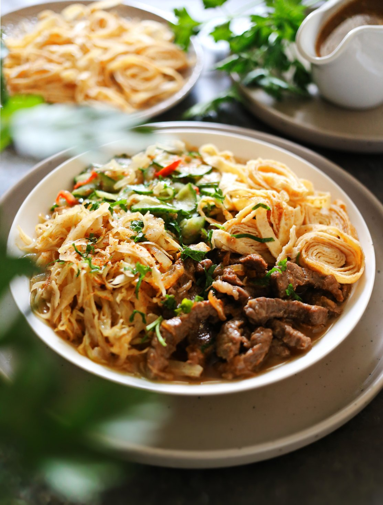

Один из самых знаменитых корейских супов. Как и многие азиатские супы, кукси – суп-конструктор, который собирают непосредственно в тарелке.
Хороший бульон с добавлением помидоров (кукси мури), лапша, нарезанное соломкой отварное или обжаренное мясо, предварительно замаринованные овощи и нарезанные полосками яичные блинчики – вот основа кукси. При этом суп может быть как холодным, так и горячим, в зависимости от желания и сезона.
В кукси важно не пожалеть кориандра и чеснока – их добавляют на каждом этапе, при подготовке овощей, мури и мяса. Нужно постоянно пробовать, балансировать вкус солью, сахаром, уксусом и перцем. Каждая составляющая супа по отдельности уже должна быть вкусной, тогда, встретившись в одной тарелке, они создадут тот самый умами – абсолютную гармонию.